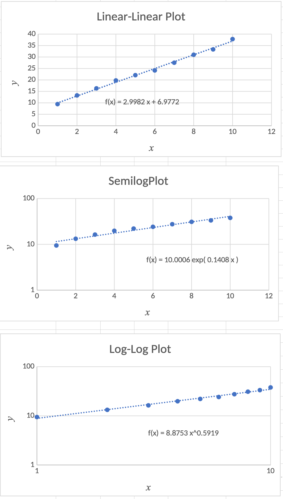
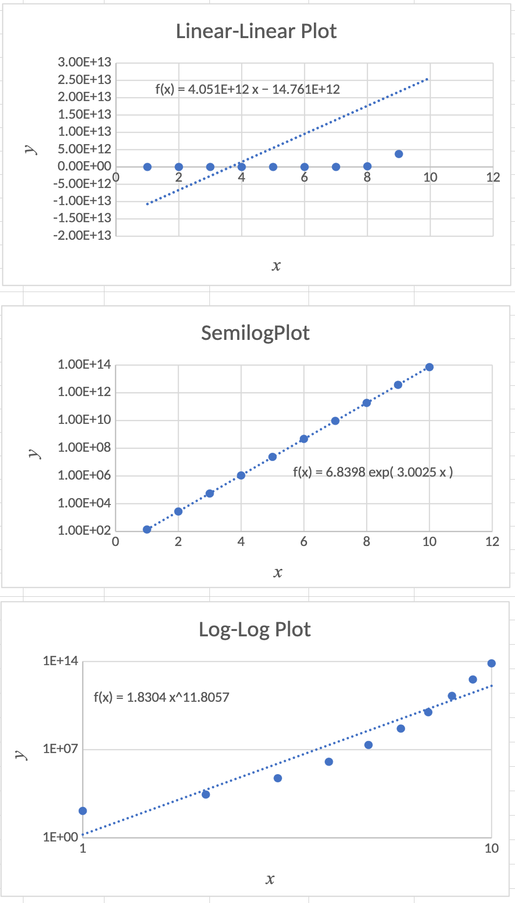
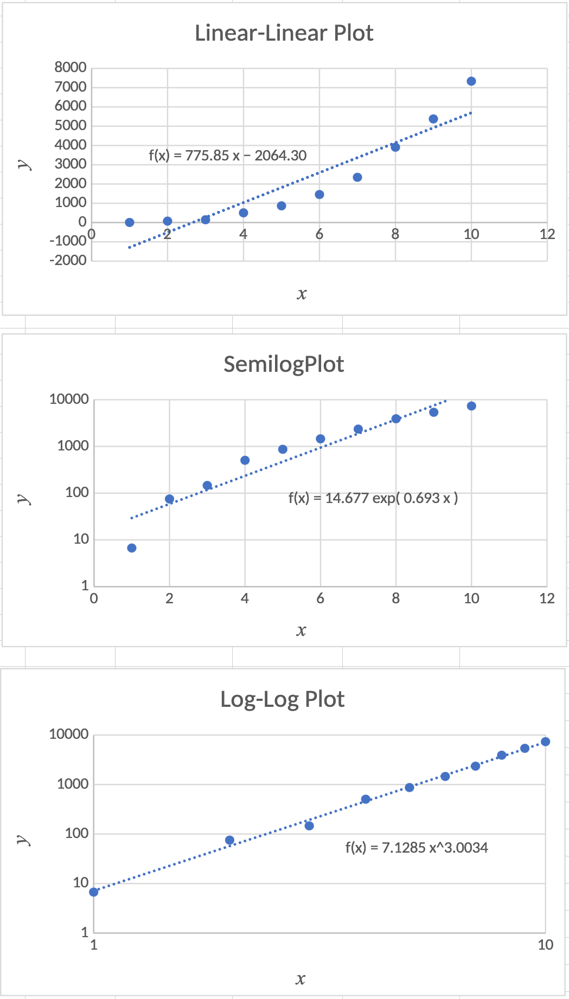

Is Your Process Data Spread Smooth or Chunky?
Just the Facts
DOFPro Team

Data Pairs
Often, engineering process data appear with a dependent, or measured, variable as a function of an independent, or set, variable i.e., pressure as a function of temperature, or flow rate as a function of time.
\[y = f(x)\]
Due to (always present) measurement uncertainty and/or process variability,
\[y_i = y_\mathrm{true} + \varepsilon_i = f(x_i) + \varepsilon_i\]
The question is how to determine \(f(x)\).
Data Plots
The human visual system is very good at seeing if a plot of data is a straight line or almost a straight line. A number of functions can be plotted as a straight line with a change of coordinates, typically from linear to logarithmic.
Original
Function
Linear
Form
Coordinate Scale
For Linear Plot
\(y = b x + a\)
\(y = b x + a\)
\(x\) – linear, \(y\) – linear
\(y = ae^{bx}\)
\(\ln y = \ln a + b x\)
\(x\) – linear, \(y\) – log (semi-log)
\(y = a10^{bx}\)
\(\log_{10} y = \log_{10} a + b x\)
\(x\) – linear, \(y\) – log (semi-log)
\(y = ax^b\)
\(\log y = \log a +b\log x\)
\(x\) – log, \(y\) – log (log-log)
Definition of a linear function:
\(f(c_1 x_1 + c_2 x_2) = c_1 f(x_1) + c_2 f(x_2)\).
For a line, \(y=bx + a\), so
\(f(c_1 x_1 + c_2 x_2) \ne c_1 f(x_1) + c_2 f(x_2)\) unless \(a \equiv 0\).
Comparisons
- The data are plotted on linear, semilog, and log-log plots, and fitted to all three functions.
- Compare noisy data generated by \(y = bx+a\), \(y = ae^{bx}\), and \(y = ax^b\).
- For each data set, the true values of \(a\) and \(b\) are \(a=7\) and \(b=3\).
- The best or “correct” fit is the one that looks the straightest and has \(a\) and \(b\) values close to 7 and 3 respectively.
Sample Linear Data
| \(x\) | \(y\) |
|---|---|
| 1 | 9.44 |
| 2 | 13.24 |
| 3 | 16.32 |
| 4 | 19.77 |
| 5 | 22.08 |
| 6 | 24.15 |
| 7 | 27.52 |
| 8 | 30.99 |
| 9 | 33.33 |
| 10 | 37.83 |

Sample Semilog Data
| \(x\) | \(y\) |
|---|---|
| 1 | 1.38E+02 |
| 2 | 2.74E+03 |
| 3 | 5.42E+04 |
| 4 | 1.09E+06 |
| 5 | 2.38E+07 |
| 6 | 4.71E+08 |
| 7 | 9.39E+09 |
| 8 | 1.86E+11 |
| 9 | 3.74E+12 |
| 10 | 7.12E+13 |

Sample Log-Log Data
| \(x\) | \(y\) |
|---|---|
| 1 | 6.706 |
| 2 | 75.22 |
| 3 | 146.2 |
| 4 | 504.7 |
| 5 | 868.2 |
| 6 | 1456 |
| 7 | 2349 |
| 8 | 3910 |
| 9 | 5377 |
| 10 | 7336 |

Nonlinear Least Squares
A subtlety of data fitting on a transformed equation is that you have also transformed the errors, and so you are no longer fitting the original function. In other words, fitting
\(\log y = \log a +b\log x\)
is different from fitting
\(y = ax^b\)
With a spreadsheet or math software, you can do nonlinear least squares data fitting, which gets around that issue.
Nonlinear Least Squares (cont.)
For the above function and your data set, you would guess values for \(a_\mathrm{fit}\) and \(b_\mathrm{fit}\), then calculate for each data pair
\[y_{i_\mathrm{fit}}=a_\mathrm{fit} x_i^{b_\mathrm{fit}}\]
\[\varepsilon_i=y_{i_\mathrm{fit}}-y_i\]
\[SSE=\sum \varepsilon_i^2\]
Then, by hook or by crook (or by using Solver) you would minimize SSE by varying \(a_\mathrm{fit}\) and \(b_\mathrm{fit}\).
The Takeaways
- The human eye is quite sensitive to straight lines and plotting data to examine for a linear relationship is a powerful way to estimate the functional relationship between pairs of data.
- A linear function such as \(y=bx+a\) appear as a straight line on a linear plot.
- An exponential function such as \(y=ae^{bx}\), or \(a\cdot 10^{bx}\) appears as a straight line on a semi-log plot.
- A power law function such as \(y=ax^b\) appears as a straight line on a log-log plot.
- There are many other relationships you can try to see if you can get a straight line.
Thanks for watching!
The Full Story companion video is in the link in the upper left. The next video in the series is in the upper right. To learn more about Chemical and Thermal Processes, visit the website linked in the description to find previous and following videos in this series.
The DOFPro Team